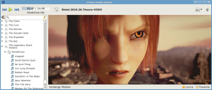
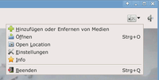
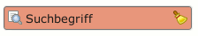

Xnoise
Dieser Artikel wurde für die folgenden Ubuntu-Versionen getestet:
Ubuntu 14.04 Trusty Tahr
Zum Verständnis dieses Artikels sind folgende Seiten hilfreich:
Xnoise  ist ein schneller Medienplayer mit einer funktionalen, auf GTK3 basierenden Oberfläche, der den Fokus auf die Playliste legt. Das in Vala geschriebene Programm setzt dabei auf das Multimedia-Framework GStreamer und spielt entsprechend alle Formate ab, die GStreamer kennt.
ist ein schneller Medienplayer mit einer funktionalen, auf GTK3 basierenden Oberfläche, der den Fokus auf die Playliste legt. Das in Vala geschriebene Programm setzt dabei auf das Multimedia-Framework GStreamer und spielt entsprechend alle Formate ab, die GStreamer kennt.
Zusätzlich ist Xnoise durch Plugins erweiterbar. Einige Plugins, zum Beispiel für das Herunterladen von Covern und Song-Texten oder für Desktop-Benachrichtigungen, sind bereits verfügbar. Die Plugins für Cover und Texte benötigen keine Anmeldung bei den Seiten, von denen die Informationen geholt werden.
|  |
| Sintel , © copyright Blender Foundation | Durian Open Movie Project |
Das Programm befindet sich noch in einem frühen Entwicklungsstadium und wird derzeit nicht weiterentwickelt (Stand: Februar 2015).
Hinweis:
Bitte Xnoise nicht mit dem Noise Audio Player verwechseln, dem neuen AudioPlayer des Elementary Projekts.
Installation¶
Das Programm ist nicht in den offiziellen Paketquellen enthalten, kann aber über ein PPA [1] bezogen werden. Unter Ubuntu 12.04 können bei der Installation Abhängigkeitsprobleme auftreten. Wie man diese löst, ist im Blogbeitrag Xnoise 0.2.19 Released, Install in Ubuntu via PPA (09/2013) beschrieben.
PPA¶
Adresszeile zum Hinzufügen des PPAs:
ppa:shkn/xnoise
Hinweis!
Zusätzliche Fremdquellen können das System gefährden.
Ein PPA unterstützt nicht zwangsläufig alle Ubuntu-Versionen. Weitere Informationen sind der  PPA-Beschreibung des Eigentümers/Teams shkn zu entnehmen.
PPA-Beschreibung des Eigentümers/Teams shkn zu entnehmen.
Damit Pakete aus dem PPA genutzt werden können, müssen die Paketquellen neu eingelesen werden.
Nach dem Aktualisieren der Paketquellen kann das folgende Paket installiert [2] werden:
xnoise (ppa)
 mit apturl
mit apturl
Paketliste zum Kopieren:
sudo apt-get install xnoise
sudo aptitude install xnoise
Bedienung¶

Das Programm kann über den Befehl xnoise oder aus dem Anwendungsmenü heraus gestartet werden:
 "Multimedia -> Xnoise" (Xfce)
"Multimedia -> Xnoise" (Xfce) "Unterhaltungsmedien -> Xnoise" (LXDE)
"Unterhaltungsmedien -> Xnoise" (LXDE)
Beim ersten Programm-Start wird man aufgefordert, Medien zur Bibliothek hinzuzufügen. Das Einlesen der Metadaten kann, je nachdem wie groß die Sammlung ist, längere Zeit in Anspruch nehmen.
Xnoise bietet ein kompaktes Design mit eigenem Kontextmenü und ohne Menüleiste. Da diese Einstellung optional ist, kann auf das übliche Layout unter "Einstellungen -> General -> Compact layout" gewechselt werden. Hier kann auch die Anzeige zusätzlicher Spalten in der Abspielliste beeinflusst werden. Für den Medienbrowser kann man die Textgröße und den Umbruch langer Zeilen einstellen. Nützlich ist je nach Geschmack die Anzeige von Hilfslinien in der Baumansicht.
| Aktionen | ||
| Icon | Text | Beschreibung |
 | "Hinzufügen oder Entfernen von Medien" | Lokale Dateien, Verzeichnisse und Streams in der Medienbibliothek verwalten |
 | "Öffnen" | Dateien und Verzeichnisse zur Trackliste hinzufügen |
| "Open Location" | Einen Stream öffnen | |
 | "Einstellungen" | Öffnet den Einstellungs-Dialog |
|  | Inkrementelle Suche, das heißt schon während der Eingabe wird gesucht und Ergebnisse werden fortlaufend aktualisiert | |
 | "Entferne Ausgewählte" | Entfernt markierte Einträge aus der Trackliste |
 | "Entferne alle" | Leert die Trackliste |
| "Video" | Vollbildmodus | |
 Übersichtsseiten:
Übersichtsseiten:- Erstellt mit Inyoka
-
 2004 – 2017 ubuntuusers.de • Einige Rechte vorbehalten
2004 – 2017 ubuntuusers.de • Einige Rechte vorbehalten
Lizenz • Kontakt • Datenschutz • Impressum • Serverstatus -
Serverhousing gespendet von